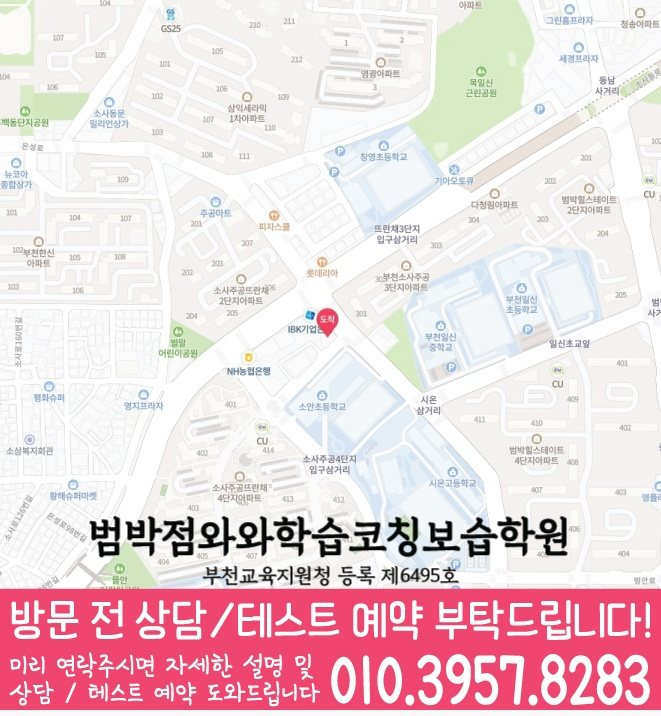

괴안동 영수학원
괴안동에서 안내하는 지점은 와와학습코칭센터 범박점입니다.
자료상 안내: 영어 초1~초6 / 중1~중3 / 고1~고2 · 수학 초1~초6 / 중1~중3 / 고1~고2

수업 안내 이미지

지점·과목 안내
괴안동 수업을 알아볼 때 확인할 지점
괴안동에서 수업을 알아보는 학생에게 안내하는 지점은 와와학습코칭센터 범박점입니다. 지점 위치와 과목별 학년을 먼저 확인해 주세요.
과목별 안내 학년
- 영어
- 초1~초6 / 중1~중3 / 고1~고2추가 학년은 상담에서 확인해 주세요.
- 수학
- 초1~초6 / 중1~중3 / 고1~고2추가 학년은 상담에서 확인해 주세요.
제공 자료에 기재된 학년입니다. 현재 개설 과정·수업 시간·반 편성은 상담에서 확인해 주세요. 안내가 없는 학년은 수업 가능 여부가 확인되지 않았습니다.
실제 지점 위치
와와학습코칭센터 범박점
경기 부천시 소사구 은성로 132 5층
주소로 네이버 지도 검색등록 정보·교습비·주변 학교
교육지원청 등록번호: 부천교육지원청 등록 제6495호
주변 학교 참고: 복사초등학교 · 부천부안초등학교 · 부천양지초등학교 · 소사초등학교 · 소안초등학교 · 창영초등학교 · 부일중학교 · 부천동여자중학교 · 부천동중학교 · 부천일신중학교 · 소사중학교 · 범박고등학교 · 소사고등학교 · 시온고등학교. 재학생 수강 여부나 학교별 반 편성을 뜻하지 않습니다.
센터 위치 안내

자세한 학습 안내 목차
학습 상담 준비
영어와 수학을 나누어 확인할 부분
범박점의 영어와 수학은 과목별 안내 학년을 각각 확인해야 합니다. 학생의 약점과 학교 일정에 따라 두 과목의 우선순위를 정리해 주세요.
함께 의논할 주제 계산 정확도 점검·공부량과 완료 기준
영어에서 확인할 것
외운 단어를 문장 속에서 이해하는지, 문법은 알아도 독해에서 적용하기 어려운지 구분해 보세요. 어려웠던 문장과 답을 고른 근거를 준비해 주세요.
수학에서 확인할 것
개념 설명, 식 세우기, 계산, 풀이 설명 중 도움이 필요한 단계를 구분해 보세요. 정답 여부만 표시된 자료보다 학생이 직접 푼 흔적이 상담에 유용합니다.
학교와 일정
괴안동 학교생활과 함께 맞춰 볼 일정
- 초등
- 복사초등학교 · 부천부안초등학교 · 부천양지초등학교 · 소사초등학교 · 소안초등학교 · 창영초등학교
- 중등
- 부일중학교 · 부천동여자중학교 · 부천동중학교 · 부천일신중학교 · 소사중학교
- 고등
- 범박고등학교 · 소사고등학교 · 시온고등학교
지역 참고 학교이며, 재원 여부나 학교별 반 운영을 뜻하지 않습니다. 재학 중인 학교의 교재·시험 범위·하교 시간을 기준으로 상담해 주세요.
자주 묻는 질문
수강 전 확인할 질문
범박점의 영어·수학 안내 학년은 어떻게 되나요?
자료에 기재된 학년은 영어 초1~초6 / 중1~중3 / 고1~고2, 수학 초1~초6 / 중1~중3 / 고1~고2입니다. 현재 개설 과정과 수업 시간은 지점 상담에서 확인해 주세요.
교습비와 현재 수업 시간은 어떻게 확인하나요?
센터별 교습비 자료에서 안내 금액을 확인할 수 있습니다. 희망 과목·학년을 알려 주고 현재 과정의 교습비, 교재비 등 추가 비용, 수업 요일과 시간을 확인해 주세요.
영어와 수학을 꼭 같은 양으로 공부해야 하나요?
현재 이해도와 학교 과제가 다르므로 두 과목의 분량을 동일하게 정할 필요는 없습니다. 과목별로 끝낼 수 있는 양과 복습 시간을 적어 보고, 함께 수강할 경우의 일정과 과제 조정 방식을 문의해 주세요.
상담 후 정리할 내용
안내받은 수강 과목·학년, 수업 요일·시간, 교습비와 추가 비용을 함께 적어 두세요. 학생이 시작할 학습 범위와 과제량, 다음에 학습 상태를 확인할 시점도 정리하면 계획을 이어 가기 좋습니다.